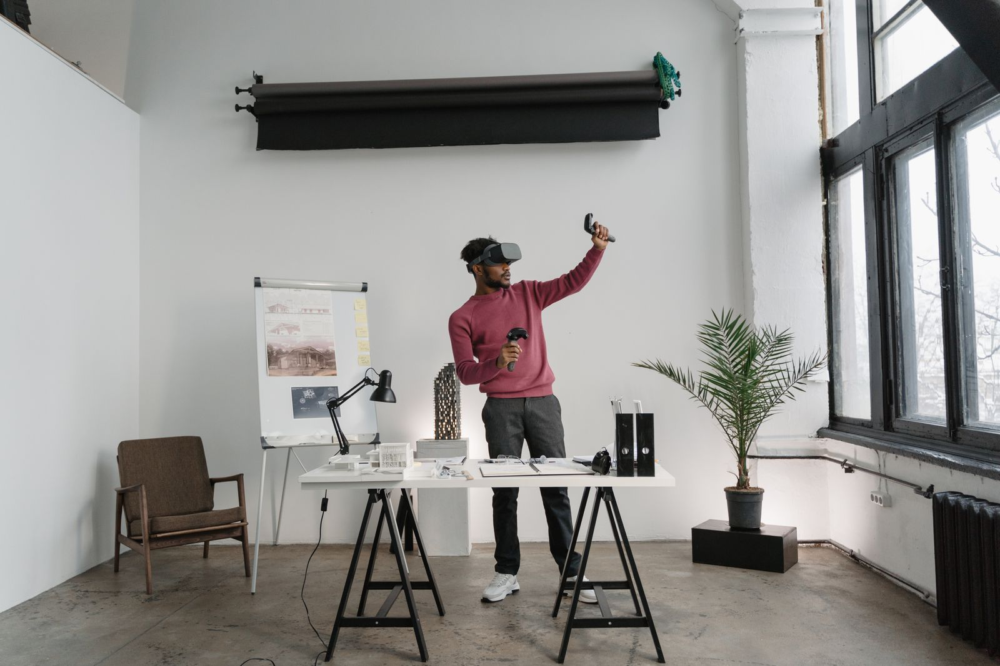

The twelve-channel simulator
CASE FILE 01 · 2024- Client
- Offshore energy training provider
- System
- VR gas-safety training simulator
- Channels
- 12 specified · 3 fitted
- Environment
- Simulator hall · 240 m³ · 3 ACH
- Status
- In service · audited yearly
The brief
A training provider was rebuilding its gas-safety simulator and had specced scent as a twelve-channel feature: gas, smoke, solvents, hot metal, “sea air”, and seven more, because the catalogue offered twelve and the tender scored features. The learning objective underneath the spec was narrower and more serious: a trainee who smells the rotten-egg cue should start the leak drill earlier, and should never learn to ignore it.
The decisions
Before building anything, the practice ran a channel audit (service S.05): a single-channel test rig, the client's own instructors and trainees, blind sessions. Each channel was scored on one question — does it change what the trainee does next? Nine did not. Two actively hurt: a constant low “sea air” background taught trainees that scent is wallpaper, and a smoke cue fired so often it was being acknowledged and ignored, which is the opposite of the reflex the course exists to build. The three that taught were the gas surrogate, a solvent cue tied to one specific drill, and a hot-electrical cue for the fault-finding module. The build shipped with three channels, dose-designed against the printed hydrogen-sulfide band and logged every session.

The outcome
The client spent the channel saving on a second simulator. In the first year, leak-drill initiation times in assessed runs improved, and — the figure the instructors cared about — false “acknowledge and continue” responses to the gas cue fell to zero in the audited sample, because the cue now only ever means one thing. The nine removed channels are listed in the rig's bench record, with the audit data, so a future procurement round has to argue with evidence rather than a catalogue.
vs channels fitted
nothing a trainee did
responses in audited runs
logged, first year
“We specified twelve scent channels. Ines built a test rig, ran our own instructors through it blind, and showed us that nine of the twelve changed nothing a trainee did. We shipped three channels, spent the saving on a second simulator — and our gas-leak recognition scores went up, because the three cues left are the ones that teach.”